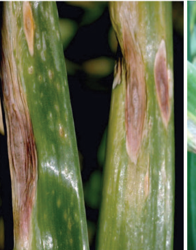
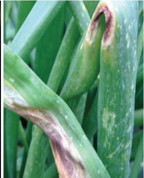
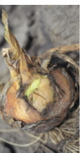
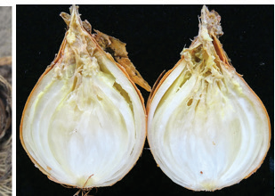
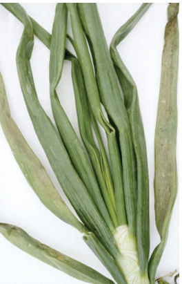
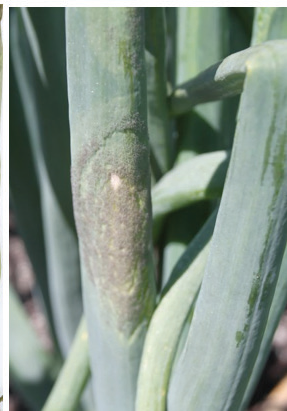

Purple blotch disease
How you know it: Small white spots on leaves become large purple blotches (refer to Figure 7.6).
How to manage it: Use resistant varieties. Rotate crops. Clean the field. Don’t over-fertilise. Use correct spacing. Ensure good drainage. Use recommended fungicides.


Onion bacterial soft rot disease
How to know it: Bulb softens and water-soaks (refer to Figure 7.7).
How to manage it: Avoid overhead irrigation when onions form bulbs. Don’t let irrigation water touch leaves.


Downy mildew disease
How to know it: Leaves turn pale green, then yellow and die. Look for grey to purplish mounds on leaves (refer to Figure 7.8).
How to manage it: Use resistant varieties, start with high-quality seeds, space plants properly, avoid overwatering, use recommended fungicides, rotate crops, and do thorough field cleaning at the end of the season.

